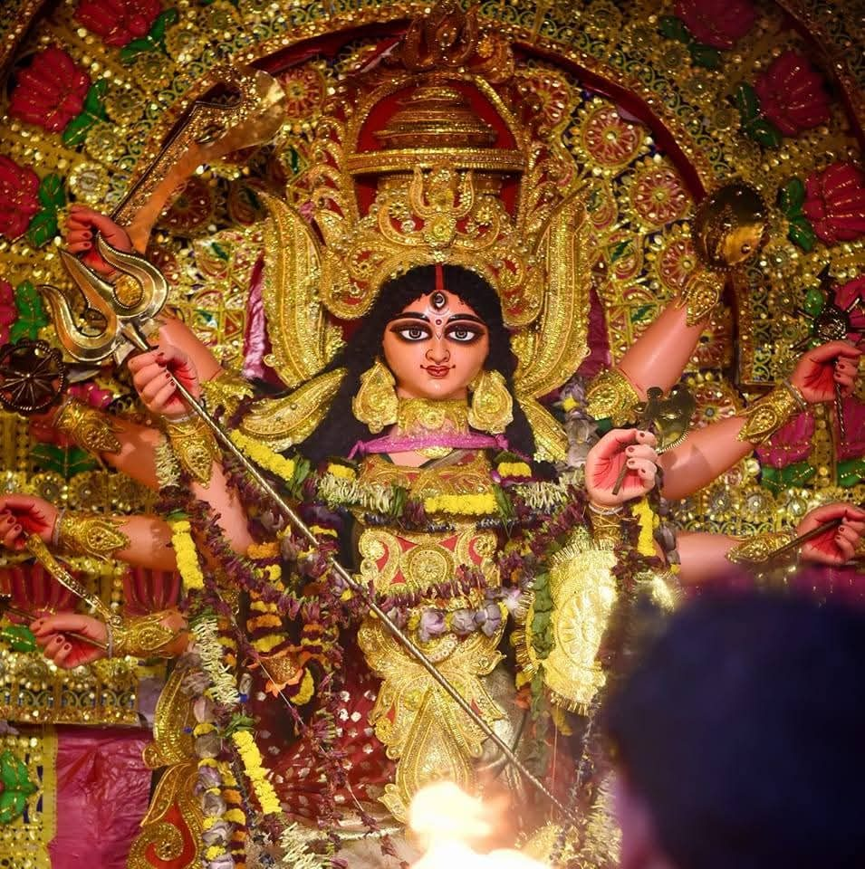
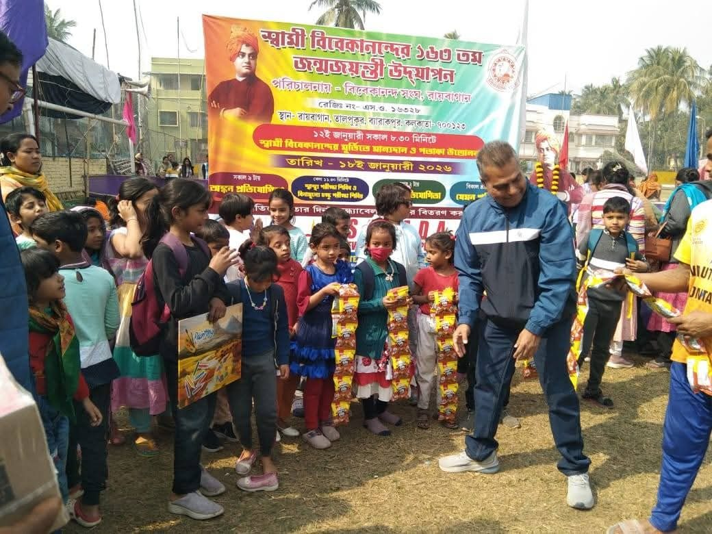

এবারের দুর্গাপুজো — মাটি থেকে মহামায়া
৭৮ বর্ষে পদার্পণ। খুঁটি পুজো দিয়ে শুভারম্ভ — ৪ঠা সেপ্টেম্বর, শুক্রবার, বিকেল ৩টে ৩০ মিনিটে, পূজা প্রাঙ্গণ, রায়বাগান, তালপুকুর, ব্যারাকপুরে।


নিঃশ্বাসে প্রশ্বাসে আমরা আছি পাশে
Vivekananda Sangha Roybagan
৭৮ বর্ষে পদার্পণ। খুঁটি পুজো দিয়ে শুভারম্ভ — ৪ঠা সেপ্টেম্বর, শুক্রবার, বিকেল ৩টে ৩০ মিনিটে, পূজা প্রাঙ্গণ, রায়বাগান, তালপুকুর, ব্যারাকপুরে।

সাংস্কৃতিক অনুষ্ঠান, আঁকা প্রতিযোগিতা, গো অ্যাজ ইউ লাইক, স্বাস্থ্য শিবির ও বসন্ত উৎসব — বছরভর নানা আয়োজন।

দুর্গাপুজো ও বছরভর অনুষ্ঠান আয়োজনে আপনার অনুদান জরুরি।